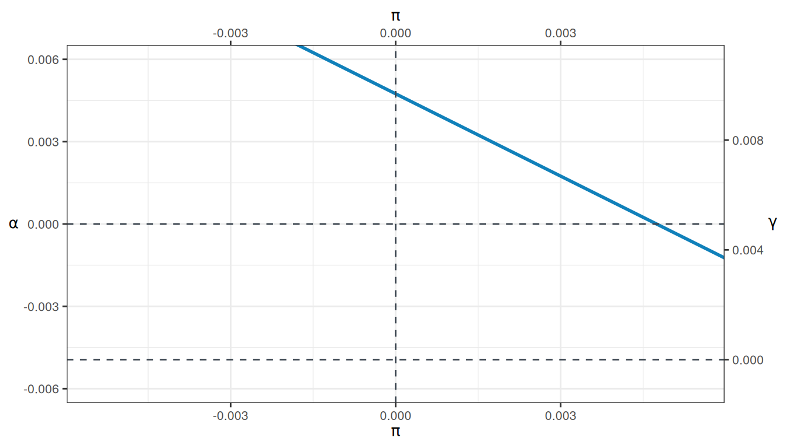
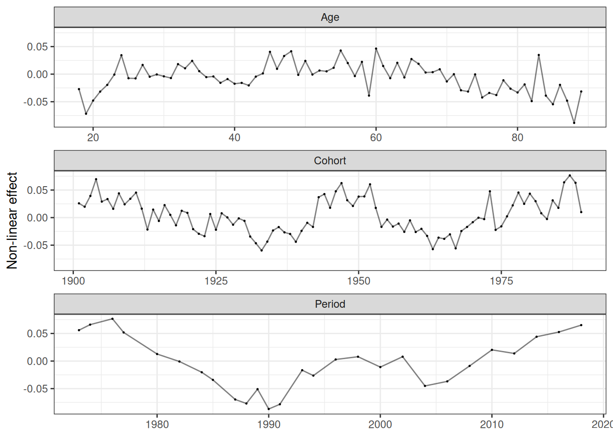
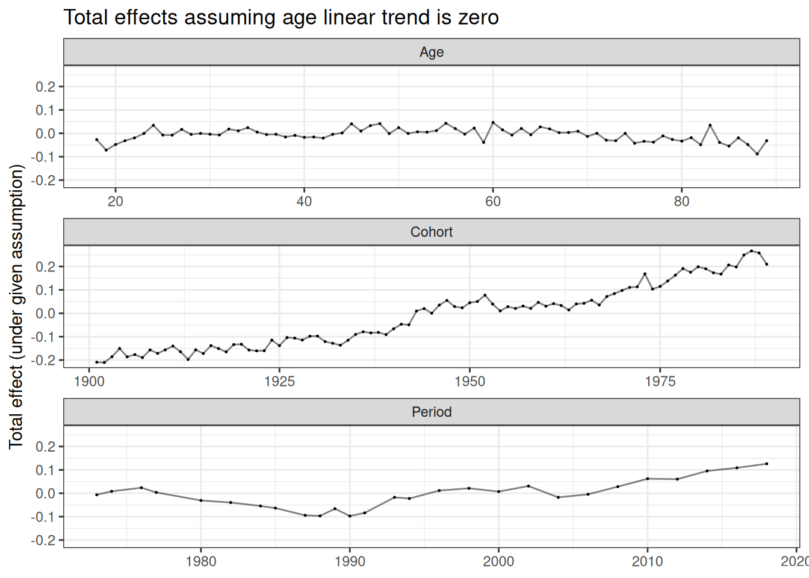
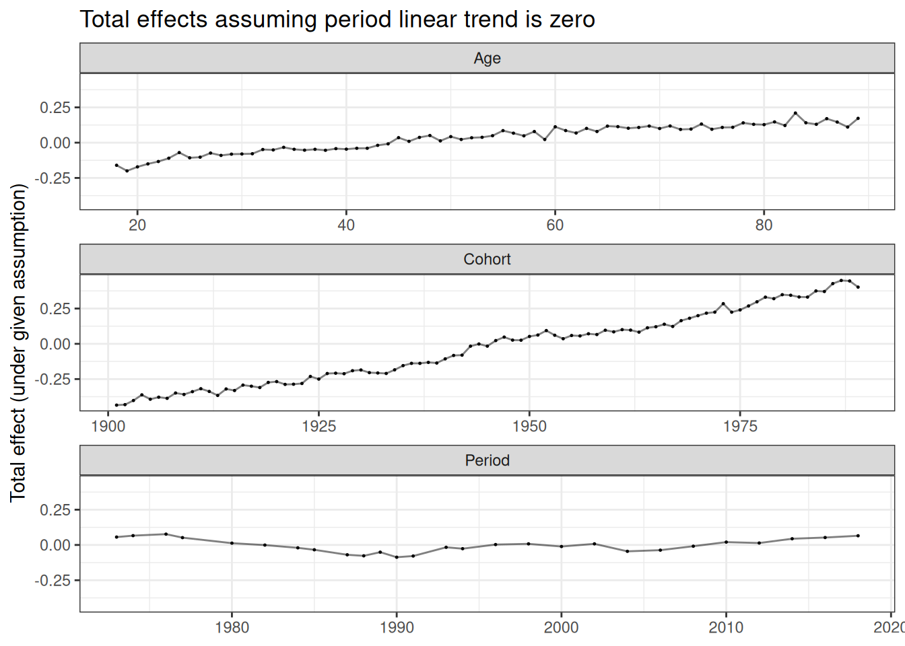
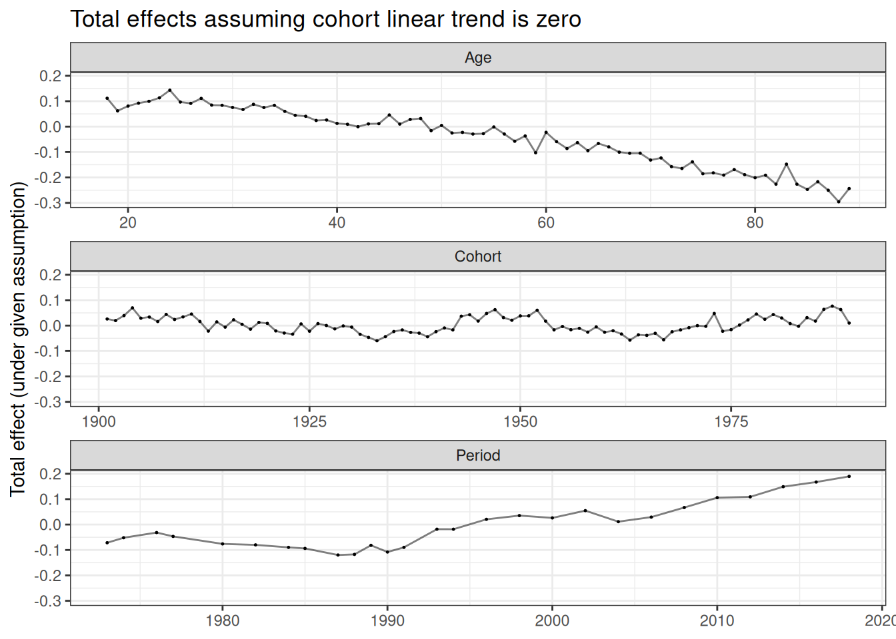

library("socialchange")
library("ggplot2")
apc_model <- apc(gss_homosex[cohort < 1990 & cohort > 1900], homosex ~ age + year + cohort)
apc_plot_two2d(apc_model)
For research purposes, this package also implements some methods on APC analysis. We use the gss_homosex dataset for these examples. For a CR-IC decomposition of the same dataset comparing intracohort change and cohort replacement, see the GSS homosexuality vignette.
library("socialchange")
library("ggplot2")
apc_model <- apc(gss_homosex[cohort < 1990 & cohort > 1900], homosex ~ age + year + cohort)
apc_plot_two2d(apc_model)
Formal analysis of the non-linearities:
apc_plot_nonlinearities(apc_model)
apc_plot_total(apc_model, list("age_linear" = 0)) +
ggtitle("Total effects assuming age linear trend is zero")
apc_plot_total(apc_model, list("period_linear" = 0)) +
ggtitle("Total effects assuming period linear trend is zero")
apc_plot_total(apc_model, list("cohort_linear" = 0)) +
ggtitle("Total effects assuming cohort linear trend is zero")